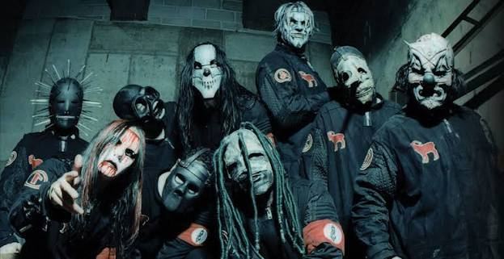
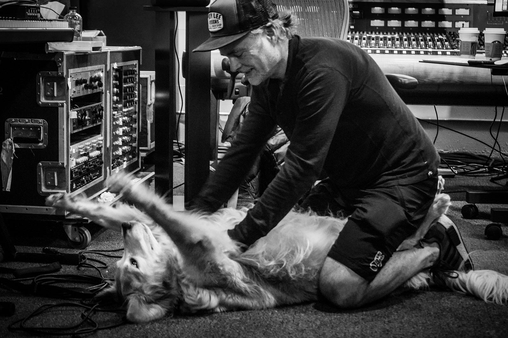

A formação teve início com um convite em um posto de gasolina: Antes de se tornarem o Slipknot, músicos da cena de Des Moines (Iowa) tocavam sob o nome The Pale Ones. O baterista Joey Jordison trabalhava no turno da noite de um posto de gasolina quando colegas o convenceram a entrar no projeto, mudando a dinâmica e levando Shawn "Clown" Crahan a assumir a percussão

Os macacões e números surgiram como crítica ao mercado: A ideia de usar macacões industriais e números de identificação nasceu como uma resposta ao mercantilismo da indústria musical — quase como dizer que, dentro daquele sistema, eles eram tratados como engrenagens ou produtos

A faixa "515" nasceu de um luto real: Durante as gravações do álbum Iowa (2001), Sid Wilson recebeu a notícia da morte do avô no dia anterior e foi ao estúdio para desabafar. Com um microfone à frente, ele soltou gritos e choros reais de angústia que acabaram entrando na introdução do disco.
O produtor Ross Robinson levava os ensaios ao extremo: Na produção do álbum de estreia homônimo (1999), Ross Robinson ficou conhecido por métodos intensos e imprevisíveis para extrair energia bruta da banda, incluindo arremessar objetos no estúdio e impor rotinas físicas pesadas.

Acidentes no palco fazem parte do folclore da banda: Entre saltos, pirotecnia e equipamentos pesados (como barris de metal na percussão), os shows renderam vários machucados sérios ao longo dos anos — incluindo quedas, cortes e queimaduras sofridas por integrantes como Sid Wilson e Shawn Crahan

As máscaras evoluíram para criações de efeitos especiais:Embora os primeiros modelos fossem feitos de forma artesanal pelos próprios músicos, a partir de 2001 a banda passou a contar com o trabalho do artista de efeitos especiais e músico Screaming Mad George para desenvolver novos designs.